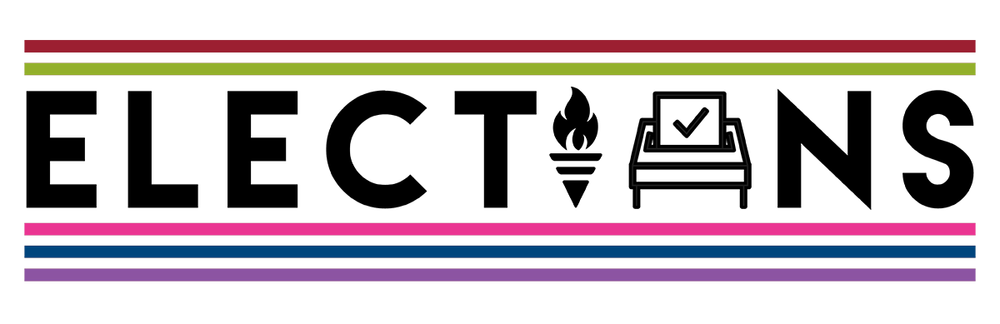

Most student leaders, like Olympic athletes, aren't born that way. They made a brave decision,to push themselves and see what they're capable of. Any student can nominate themselves.
If you feel you have what it takes to lead students, to create positive, lasting change for fellow students, read about the positions and nominate yourself for one

The Vote
Voting is open to all registered students. It can be done on a pc, your mobile, or at your campus voting booth.
Make sure you have successfully logged into uwsu.com. This is how you will vote.
Nominate yourself
The Candidates
Candidates nominate themselves to stand for elected positions. After submitting their manifestos, they will begin preparing themslves for facing-off with the other candidates during campaigning week and voting week
Nominate yourself
Results
Candidates nominate themselves to stand for elected positions. After submitting their manifestos, they will begin preparing themslves for facing-off with the other candidates during campaigning week and voting week
Nominate yourself
